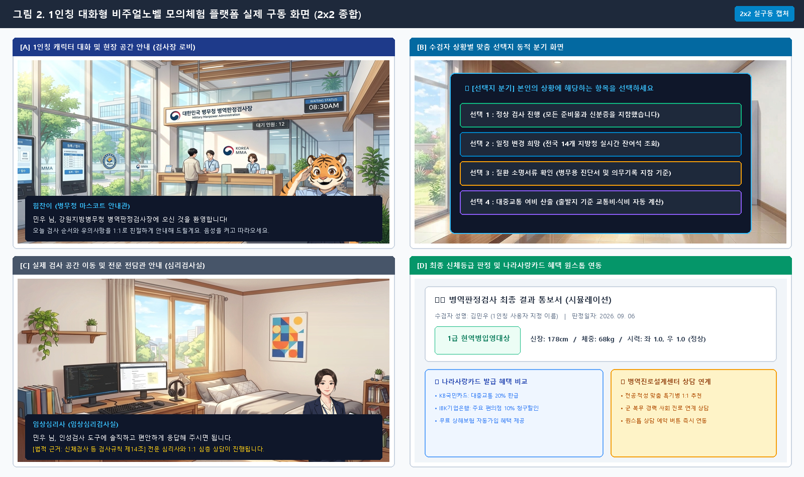
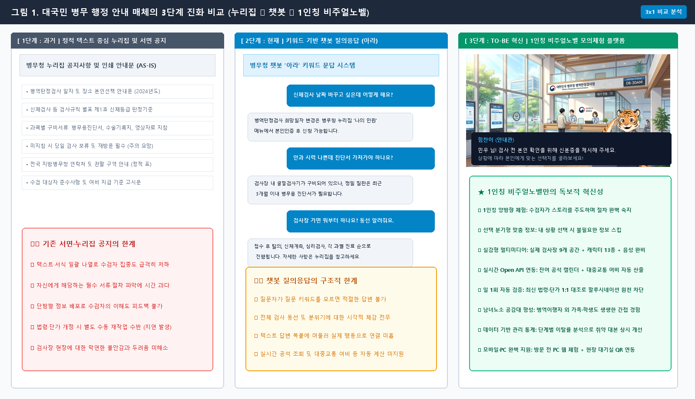
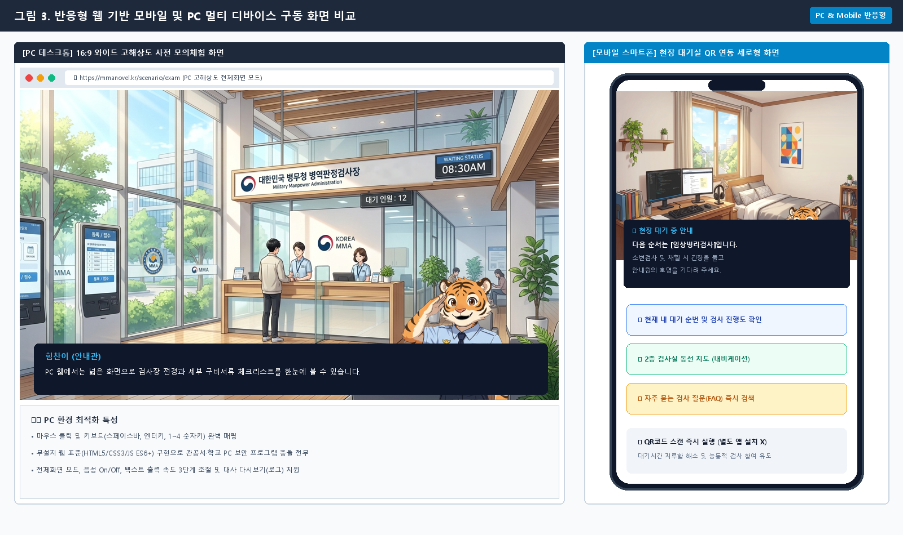
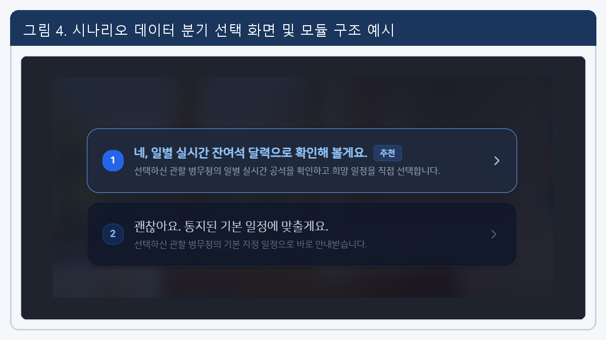
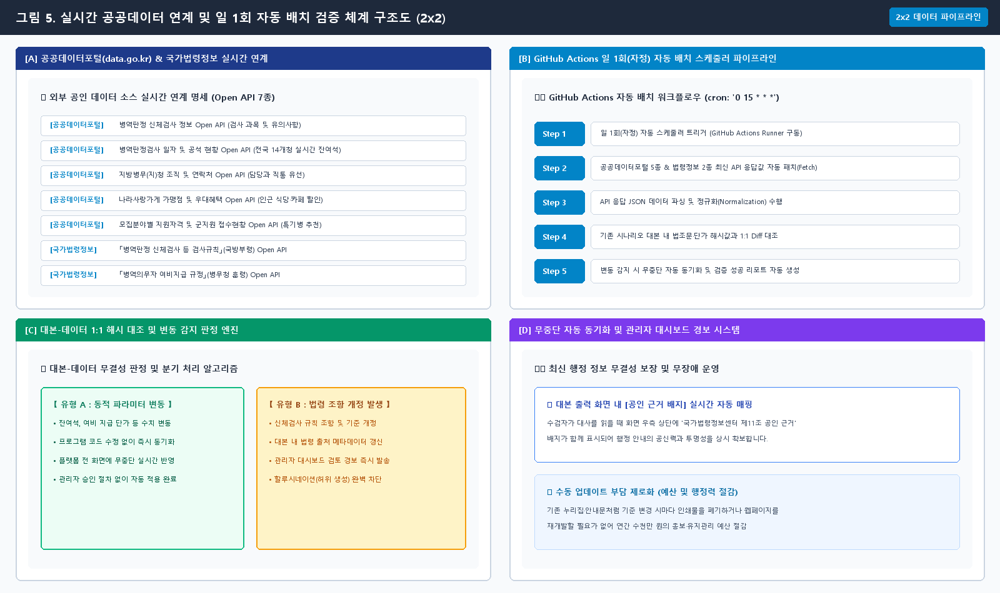
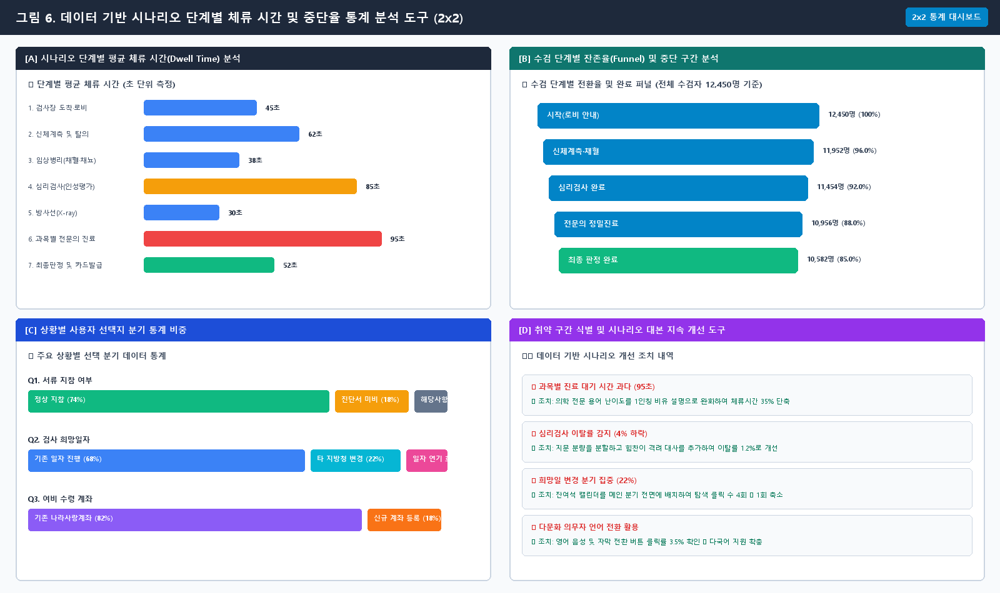
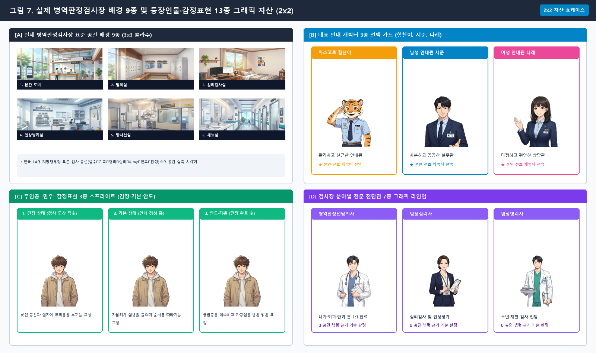
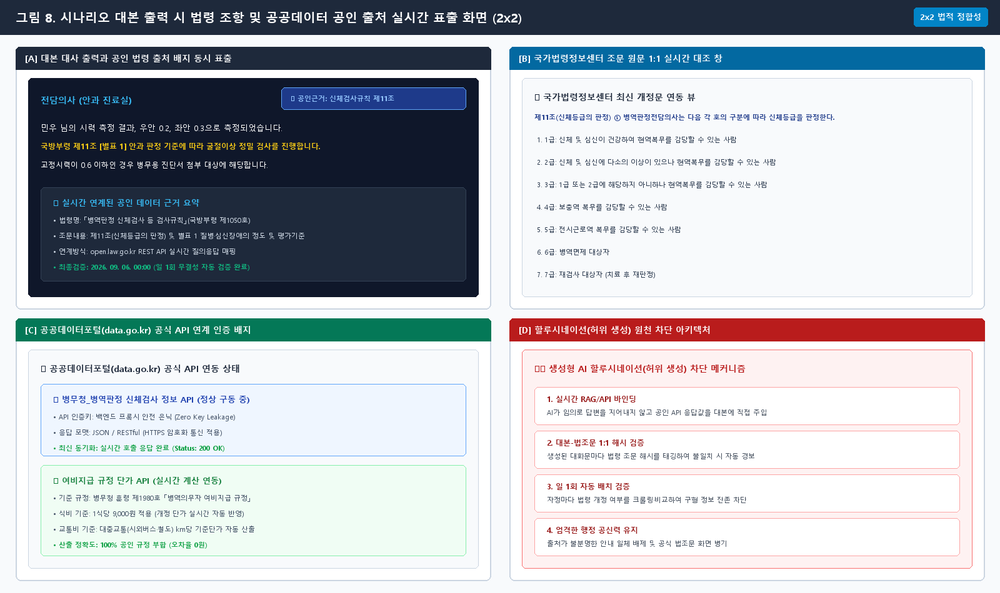
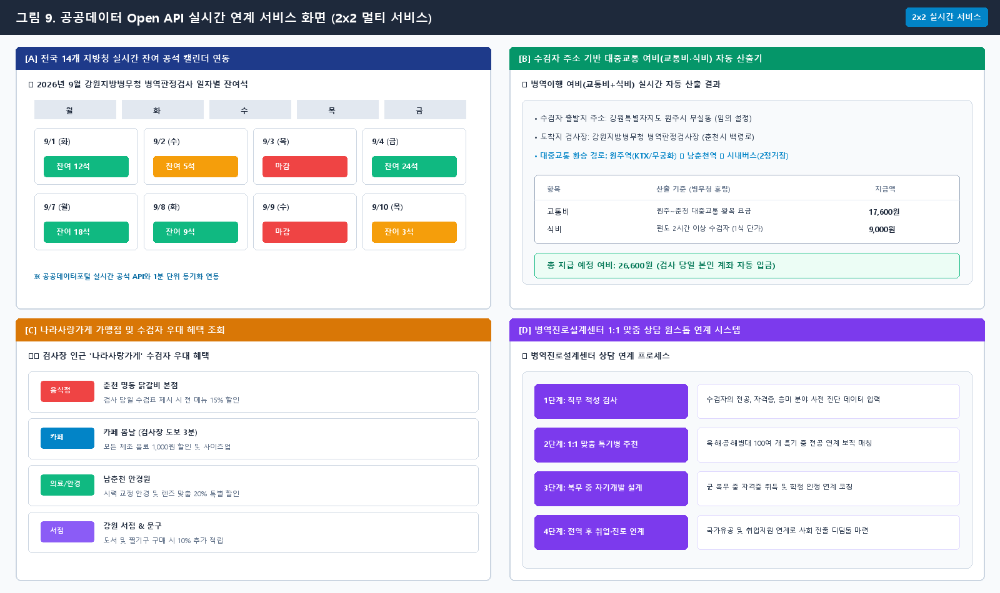
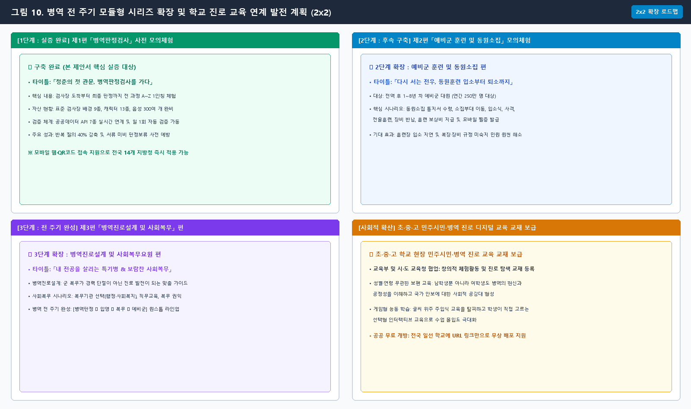

| 과 제 명 | 공공데이터와 생성형 AI 기반의 『시나리오별 병역이행 사전 모의체험 플랫폼』 구축
- 1인칭 주인공 시점의 몰입형 모의체험 콘텐츠 「청춘의 첫 관문, 병역판정검사」 구현 - |
|---|---|
| 제안 배경 및 필요성 | □ 서면·문서 중심 단방향 안내 관행에 따른 MZ세대 정보 수용성 저하
○ (서면 공지의 한계) 누리집 공지, PDF 안내문, 종이 통지서는 모바일 환경에 익숙한 MZ세대의 관심을 유도하지 못해 핵심 규정 및 지참서류 인지 실패 초래
○ (병역의무의 체감도 한계) 일반 행정 서비스와 달리 병역은 만 19세 청년 전원에게 부과되는 생애 최초의 법정 의무이나, 행정 경험이 부족한 초기 의무자에게 기존 서면·텍스트 중심 안내는 체감도 및 정보 수용성 저하 초래
○ (대국민 체감 수단 부재) 병역이행자 외에 가족 및 학생 등은 정적 안내문만으로 검사 과정을 체감할 수단이 없어, 병무 행정의 공정성 체감 및 사회적 공감대 확산에 한계
○ (분산 구축의 비효율) 정책별 단발성 웹페이지 분산 개발로 예산 중복 투자 발생 및 정책 확장을 뒷받침할 표준 프레임워크 부재
○ (체감도 분석의 부재) 단방향 배포 후 MZ세대 수검자들이 어느 단계에서 이해를 못 하고 이탈하는지 파악·개선할 관리 체계 전무
□ MZ세대 눈높이 맞춤형 『병역이행 사전 모의체험 플랫폼』 구축
○ (양방향·체감형 행정 서비스 전환) 단순 열람을 탈피하여 MZ세대가 직접 선택·판단하며 절차를 미리 경험하는 1인칭 양방향 체험 플랫폼 구현 필요성 증대
○ (비주얼노벨 시스템 구축) 본인 이름 설정 및 선호 안내 캐릭터(마스코트 힘찬이, 남·여 안내관 3종) 선택 기능을 통해 친밀감과 정보 집중도를 극대화하고, 수검자가 스토리를 주도하며 행정 절차를 생생하게 사전 체험
- 비주얼 노벨(Visual Novel): 화면 속 대화와 배경, 캐릭터 표정, 음성 안내에 상황별 선택지를 결합하여 이용자가 직접 선택하며 이야기를 풀어나가는 1인칭 대화형 콘텐츠
 < 그림 2. 1인칭 대화형 비주얼노벨 플랫폼 실제 구동 화면 (2x2 멀티 패널: 로비 안내 / 맞춤 선택지 / 심리검사실 / 판정 결과) >
- (선택 분기형 맞춤 정보 습득) 전체 규정이 일괄 나열된 기존 누리집과 달리, 의무자가 본인의 상황(일정 변경 여부, 질환 이력 등)에 맞게 선택지를 고르면 스토리가 즉시 분기되어 무관한 내용 열람에 따른 시간 낭비 없이 필요한 핵심 정보만 집중적으로 신속 습득
○ (공공데이터·법령 기반 시나리오 구현) 시나리오 대본 내 최신 법령정보 및 공공데이터 API 연계, 관할 지방청 잔여석 조회·거주지 기준 여비 산출 등 실제 행정 정보 기반 실감형 사전 모의체험(시뮬레이션) 제공
○ (일 1회 시나리오 검증체계 도입) 시나리오 대본을 최신 공공데이터 및 법령정보와 자동 대조하여, 내용 불일치와 오류를 선제적으로 점검·보완함으로써 행정 안내의 최신성과 신뢰도 상시 확보
- (실제 대본 검증 예시) 플랫폼 내 대본의 「여비 지급 안내(식비·교통비 단가)」 및 「검사규칙 조항」을 공공데이터포털 여비 단가 API 및 국가법령정보센터 최신 개정문과 일 1회 자동 비교·검증하여, 단가 변동이나 법조문 개정 시 별도의 수동 콘텐츠 업데이트(재개발) 없이도 항상 최신 공인 자료를 무중단 유지하고 행정 안내의 무결성 보장
○ (이용 데이터 기반 지속 개선) 사용자 시나리오 단계별 진행도와 이탈 데이터 모니터링 시스템 구축, 데이터 분석 바탕 문제 구간 대본 및 안내 방식 지속 보완·발전 체계 확립
○ (시나리오 확장을 통한 정책 홍보) 시나리오 추가로 병역 전 주기(입영·복무·예비군) 정책 정보를 맞춤형으로 전달·홍보할 수 있으며, 타 부처 확산 가능성이 높아 병무청의 선제적 구축을 통한 공공 디지털 행정 혁신 선도
○ (남녀노소 누구나 체감하는 병역 자긍심 고취) 1인칭 가상 모의체험을 통해 수검 당사자의 불안 해소는 물론, 병역이행자가 아닌 가족이나 초·중·고 학생까지 검사장 전 과정을 생생하게 간접 경험함으로써 병역의 공정성 체감 및 사회적 자긍심 고취
□ 첫 번째 시나리오 「병역판정검사」: 검사 전 과정(A~Z) 1인칭 모의체험
○ (수검자 심리적 불안 해소) 검사장 도착부터 최종 판정까지 전 과정을 1인칭으로 직접 모의체험하여 막연한 두려움을 해소하고 능동적 참여 유도
○ (현장 접근성 강화) 병역판정검사 대기 시 스마트폰 QR코드나 모바일 웹 접속을 통해 별도 앱 설치 없이 다음 검사 순서와 유의사항 손쉽게 확인
○ (행정 민원 감축 및 편의 제고) 공공데이터 API 및 법령 기반으로 검사 준비물과 행정 전반의 핵심 정보를 시나리오화하여, 현장 행정 민원 감축 및 민원인 편의성과 행정 신뢰도 제고
 < 그림 1. 대국민 병무 행정 안내 매체의 3단계 진화 비교 (3x1 가로 비교: 1단계 누리집 ➔ 2단계 챗봇 ➔ 3단계 1인칭 비주얼노벨) > |
| 연구분야 | 병역판정검사 / 동원·소집 / 대국민 디지털 혁신 / 정보기획 |
| 소속기관 | 강원지방병무청 (※ 소속 지방청명으로 자율 수정 가능) |
| 대표직원 | 소속 : 병역판정검사과 / 직급·성명 : 주무관 O O O |
| 참여인원 | 소속 : 병역판정검사과 / 직급·성명 : 주무관 O O O 외 O명 |
| 항목 | 세부 내용 |
|---|---|
| 워크메이트 활용 (가점 5점) | □ [검사 실무 절차 질의] 업무편람 바탕의 현장감 있는 시나리오 작성
○ 병역판정검사 실무 절차 및 업무편람 질의
- 워크메이트를 통해 병역판정검사 업무편람 및 검사규칙의 실제 진행 절차, 과목별 검사 동선, 신체등급 판정 기준 참고
○ 검사 실무 기준에 부합하는 시나리오 구성
- 현장 검사 동선(접수 ➔ 신체계측 ➔ 과목별 검사 ➔ 최종 판정)과 구비서류 지침을 충실히 반영하여 현실감 높은 모의체험 시나리오 구현
□ [민원 분석] 병역판정검사 주요 민원 기반 상황별 선택지 설계
○ 병역판정검사 관련 주요 민원 분석
- 워크메이트에 축적된 질의회신 및 주요 민원(과목별 병무용 진단서 구비 요건, 영상자료 지참 기준, 신분증 등 필수 준비물) 도출
○ 수검자 오해·실수 예방을 위한 시나리오 상황별 선택지 반영
- 도출된 주요 민원 사례를 시나리오 내 핵심 상황별 선택지로 구현하여, 의무자의 시행착오 및 단순 행정 민원 사전 예방 |
| 활용 모델 | □ 최신 생성형 AI(언어·시각·코드) 및 오픈소스 기술 복합 활용
○ 생성형 AI 언어·코드 모델 (Google Gemini):
- *시나리오 분석 및 법령 대조*: 작성된 시나리오와 실제 병역 법령·검사규칙을 대조하여 절차적 오류 및 법적 정합성 사전 검증
- *대화문 구성 및 문체 정제*: 딱딱한 행정 용어를 의무자 눈높이에 맞춘 직관적인 1인칭 대화형 문체로 정제
- *웹 구조 설계 및 코드 생성*: HTML5, CSS3, JavaScript (ES6+ 표준) 기반의 무설치 초경량·고반응성 웹 구조 설계 및 PC·모바일(반응형 웹) 환경 모두 지원
○ 생성형 AI 시각 디자인 모델 (Google Flow):
- *대본 맞춤형 캐릭터 시각화*: 시나리오 대본 흐름 및 상황별 대사에 부합하는 다양한 맞춤형 캐릭터와 표정 변화 구현
- *검사장 실제 공간 배경 이미지*: 전국 지방청 표준 검사장 환경(로비, 탈의실, 신체계측실, 채혈실, X-ray실, 심리검사실, 중앙판정실 등)의 사실적 시각화
○ 오픈소스 기술 및 다국어·TTS 지원: GitHub Actions(일 1회 데이터 무결성 자동 검증 스케줄러), Web Speech API(표준 음성) 연동 및 외국인·다문화 의무자를 위한 한/영 전환·맞춤 음성 안내 지원 (300여 개 음성 파일 생성 및 실시간 출력) |
| 구현 방법 및 핵심 기능 | □ 모듈형 확장식 비주얼노벨 플랫폼 개발
○ 모바일·PC 멀티 디바이스 지원 및 대국민 접근성 강화
- 모바일 및 PC 환경 완벽 지원을 통해 장소 제약 없는 반응형 웹 플랫폼 자체 구축 (HTML5, CSS3, JavaScript 기반)
- 1인칭 대화창, 텍스트 타이핑 출력 연출, 음향 제어 및 대사 자동저장 기능 구현
 < 그림 3. 반응형 웹 기반 모바일 및 PC 멀티 디바이스 구동 화면 비교 (PC 와이드 뷰 & 현장 대기실 모바일 세로 뷰) >
○ 시나리오 모듈 분리형 확장 구조 확립
- 플랫폼 엔진과 시나리오 데이터 분리 설계로 프로그램 코드 수정 없는 신속·용이한 대본 수정 및 유지관리 편의성 확보
- 시나리오 데이터 추가만으로 신규 정책 홍보 즉각 구현 가능, 병역판정검사를 시작으로 예비군훈련·사회복무 등 병무행정 전 주기 체계 구축 및 타 기관 정책으로 확장 가능
- *사용자 선택 기반 동적 분기 구조*: 일정 변경 희망 여부, 질환 이력 등 의무자의 상황별 선택에 따라 대화 경로가 자동 분기되어, 무관한 정보 탐색에 따른 시간 낭비를 배제하고 본인에게 꼭 필요한 맞춤 정보만 신속 습득
 < 그림 4. 시나리오 데이터 모듈 분리 구조 및 실제 사용자 선택 분기 화면 (2x2: 분리 아키텍처 및 상황별 3대 분기 경로) >
○ 실시간 공공데이터 연계 및 일 1회 자동 검증 체계
- 공공데이터포털(잔여석, 여비 기준) 및 국가법령정보(검사규칙, 병역법) Open API를 공식 근거로 시나리오 대본 생성
- 일 1회 자동 배치 스케줄러(GitHub Actions) 구동으로 데이터 변동 감지 및 최신 행정 정보 무결성 상시 유지 (허위 정보 차단)
 < 그림 5. 실시간 공공데이터 연계 및 일 1회 자동 배치 검증 체계 구조도 (2x2: API 연계 / 스케줄러 / 1:1 대조 / 자동 동기화) >
○ 데이터 기반 이용 통계 도구 제공
- 시나리오 단계별 사용자 체류 시간 및 중단 구간 데이터 통계 수집·분석
- 분석된 통계 데이터를 바탕으로 취약 구간 대본과 선택지를 지속 보완·개선
 < 그림 6. 데이터 기반 이용 통계 도구 대시보드 (2x2: 단계별 체류시간 / 수검 퍼널 / 선택지 통계 / 취약구간 개선) >
□ 플랫폼 첫 번째 시나리오 「병역판정검사」 모의체험 적용
○ 검사 전 과정(A~Z) 1인칭 현장 동선 반영
- 검사장 접수부터 심리검사, 임상병리(소변·채혈), 방사선, 과목별 정밀검사, 판정, 나라사랑카드 발급까지 전 과정 1인칭 모의체험 구현
- 낯선 검사 절차와 공간에 대한 심리적 두려움 사전 해소 및 몰입도 제고
- *남녀노소 누구나 체감하는 공감형 간접 체험*: 당사자뿐 아니라 병역이행자가 아닌 가족·학생 등 국민 누구나 검사장 전 과정을 생생하게 간접 경험할 수 있도록 구현하여 병무 행정의 투명성과 공정성 체감
○ 실감형 멀티미디어(배경·캐릭터·동영상) 및 다국어·음성 구현
- *검사장 표준 배경 9종*: 로비, 탈의실, 신체계측실, 임상병리실, 심리검사실, 진료실, 중앙판정실 등 실제 공간 9종 시각화
- *주인공 이름 및 선호 안내 캐릭터(3종) 선택*: 의무자 본인 이름 설정과 더불어 대표 안내 캐릭터 3종(병무청 마스코트 '힘찬이', 남성 안내관, 여성 안내관) 중 본인이 선호하는 캐릭터를 직접 선택하여 안내받도록 구현, 정보 전달 친밀감 및 청취 몰입도 극대화
- *등장인물 및 감정표현 13종*: 수검 의무자 감정표현 3종(긴장·기본·안도), 대표 안내 캐릭터 3종, 검사 분야별 전담관 7종(전담의사, 병리사, 심리사, 판정관 등) 그래픽 구축
- *공간 이동 동영상 및 다국어·TTS*: 검사장 공간 이동 시 현장 안내 동영상 연출, 전 대사 한/영 다국어 지원 및 캐릭터별 음성(TTS) 출력 완비
 < 그림 7. 실제 검사장 공간 9종 및 캐릭터·전담관 13종 종합 자산 쇼케이스 (2x2: 검사장 배경 / 대표 안내관 3종 / 표정 3종 / 전담관) >
○ 실제 법령 및 공공데이터 바탕 법적 정합성 확보
- 국가법령정보(검사규칙, 병역법) 및 공공데이터 Open API를 기반으로 실제 과목별 검사 진행 기준 및 신체등급(1~7급) 판정 요건 반영
- 시나리오 대본 출력 시 관련 법령 조항 및 공공데이터 공인 출처(근거)를 실시간 표출하여 행정 공신력 확보 및 할루시네이션(허위 정보 생성) 차단
 < 그림 8. 법령 조항 및 공공데이터 공인 출처 실시간 표출 화면 (2x2: 대본 근거 배지 / 법령 원문 대조 / API 인증 / 허위생성 차단) >
○ 주요 민원 사전 해소 및 서류 미비 판정보류 예방
- 주요 민원 사례(병무용 진단서 발급 기준, 영상자료 지참, 신분증 등 필수 준비물)를 시나리오 내 핵심 분기 선택지로 구성
- 서류 미비로 인한 당일 판정보류 및 불필요한 재방문 차단, 단순·반복 민원 대폭 감축
○ 공공데이터 실시간 연계를 통한 맞춤형 행정 서비스 체감도 제고
- 공공데이터 Open API를 실시간 연계하여 실제 행정 데이터를 시나리오에 즉각 주입함으로써 수검 의무자의 현장 체감도 및 몰입도 극대화
- 관할 지방청 선택에 따른 전국 지방청 실시간 잔여 공석 캘린더 조회 연동
- 수검자 출발지 주소 기반 대중교통 거리 기준 병역이행 여비(교통비·식비) 자동 산출
- 나라사랑카드 발급 혜택 비교 및 병역진로설계센터 상담 예약 원스톱 연계
 < 그림 9. 공공데이터 Open API 실시간 연계 서비스 (2x2: 실시간 잔여석 캘린더 / 여비 자동산출 / 제휴할인 / 진로센터 연계) > |
| 데이터 활용 | □ 공공데이터 연계·보안처리 및 일 1회 자동 검증 아키텍처
┌────────────────────────────────────────────────────────────────────────────────────────────────┐
│ [1. 외부 공인 데이터 소스 실시간 연계] │
│ • 공공데이터포털(data.go.kr) Open API (5종): 병무청 신체검사·공석·조직정보·나라사랑가게·모집병│
│ • 국가법령정보(open.law.go.kr) Open API (2종): 「신체검사 등 검사규칙」, 「여비지급 규정」 │
└──────────────────────────────────────────────┬─────────────────────────────────────────────────┘
▼
┌────────────────────────────────────────────────────────────────────────────────────────────────┐
│ [2. 일 1회(Daily) 자동 스케줄러 기반 데이터 수집 (GitHub Actions)] │
│ • 일 1회(자정) 자동 배치 스케줄러 실행 ➔ 최신 API 데이터셋 및 법령 조문 응답값 자동 패치(Fetch) │
└──────────────────────────────────────────────┬─────────────────────────────────────────────────┘
▼
┌────────────────────────────────────────────────────────────────────────────────────────────────┐
│ [3. 대본-데이터 무결성 대조 및 변동 감지 판정 엔진 (Diff Comparator)] │
│ • 기존 시나리오 대본 내 법령 조문, 여비 단가, 판정 기준과 최신 API 응답값 1:1 해시(Hash) 대조 │
└───────────────────────┬───────────────────────────────────────────────┬────────────────────────┘
│ [변동 감지 시 세부 판단 분기] │
▼ ▼
┌──────────────────────────────────────────────┐ ┌──────────────────────────────────────────────┐
│ [유형 A : 동적 파라미터 변동] │ │ [유형 B : 법령 조항 및 판정 지침 개정] │
│ • 잔여석, 여비 지급 단가 등 수치 변동 │ │ • 검사규칙 조항, 구비서류 기준 개정 │
│ • 코드 수정 없이 즉시 무중단 자동 동기화 │ │ • 대본 내 출처 메타데이터 자동 매핑 │
│ (플랫폼 전 화면에 실시간 즉시 반영) │ │ • 관리자 대시보드 경보 및 검토 알림 발송 │
└───────────────────────┬──────────────────────┘ └──────────────────────┬──────────────────────┘
└───────────────────────┬───────────────────────┘
▼
┌────────────────────────────────────────────────────────────────────────────────────────────────┐
│ [4. 시나리오 대본 공인 근거 결합 메타데이터 및 표출 시스템] │
│ • 시나리오 대본 출력 시 법령·API 공인 근거 결합 ➔ 화면 내 '공인 근거 배지' 실시간 표출 │
│ • 최신 행정 정보 유지 및 할루시네이션(Hallucination) 차단 / 구형 정보 잔존 문제 해소 │
└────────────────────────────────────────────────────────────────────────────────────────────────┘1) 실시간 연계 공공데이터 및 법령정보 세부 명세 (공식 Open API 7종)
○ 공공데이터포털(data.go.kr) Open API (5종)
- ① *병무청_병역판정 신체검사 정보 Open API*: 수검 대상자 유의사항, 검사 과목 및 일자별 진행 절차 실시간 연계
- ② *병무청_병역판정검사 일자 및 공석 현황 Open API*: 전국 14개 지방병무청 일자별 실시간 잔여 공석 조회 및 희망일 변경 연동
- ③ *병무청_지방병무(지)청 조직 및 연락처 Open API*: 관할 지방병무청 병역판정검사과 직통 유선 연락처 및 청사 교통편 매칭 안내
- ④ *병무청_나라사랑가게 가맹점 및 우대혜택 Open API*: 전국 검사장 인근 음식점·카페 등 수검자 할인 혜택 데이터 연계
- ⑤ *병무청_모집분야별 지원자격 및 실시간 군지원 접수현황 Open API*: 신체등급·전공 연계 맞춤 특기병 추천 및 실시간 지원 경쟁률 연동
○ 국가법령정보(open.law.go.kr) Open API (2종)
- ⑥ *「병역판정 신체검사 등 검사규칙」(국방부령) Open API*: 과목별 질환 평가기준 및 [별표 1~3] 신체등급(1~7급) 판정 기준 대조
- ⑦ *「병역의무자 여비지급 규정」(병무청 훈령) Open API*: 출발지 주소 기반 대중교통 거리 기준 여비(교통비·식비) 자동 산출 연동
2) 일 1회 자동 대본-데이터 정합성 검증 체계
○ 자동 스케줄러 데이터 수집: 일 1회(자정) 자동 스케줄러(GitHub Actions)가 Open API 최신 응답값 및 법령 개정 사항 자동 수집
○ 변동 사항 판정 및 동기화: 잔여석·여비 등 수치 변동은 실시간 자동 동기화, 법령 개정 시 대본 내 근거 메타데이터 자동 갱신 및 관리자 알림 발송
○ 행정 정보 신뢰도 보장: 시나리오 대본 출력 시 공인 출처(근거)를 실시간 표출하여 최신 행정 정보 유지 및 할루시네이션 차단
3) 공공데이터 연계 보안 및 개인정보 보호 조치
○ 개인정보 미수집 원칙(Zero-PII): 주민등록번호 등 민감정보 일체 미수집, 가상 입력 데이터는 세션 종료 시 브라우저에서 즉시 파기 (서버 미저장)
○ API 보안 및 키(Key) 은닉: API 호출 인증키를 사용자 화면에 노출하지 않고 백엔드 프록시로 은닉, 전 구간 HTTPS 암호화 통신 적용
○ 익명 통계 집계 및 규정 준수: 개인 식별 정보를 일체 배제한 순수 시나리오 이용 통계만 집계, 공공기관 정보보안 기본지침 준수 |
| 세부 개선 내용 | [현 행 (AS-IS)]
□ 공급자 중심의 단순 정보 공지 및 일방향 홍보 배포물 의존
○ 누리집·인쇄물의 전달력 한계: 텍스트·표 중심 구성으로 시각적 몰입도가 낮아 핵심 규정 및 지참서류 인지 누락 발생
○ 나열식 정보의 탐색 시간 과다: 검사 절차·규정의 단순 나열로 개인 조건에 부합하는 필수 정보 확인 시 탐색 시간 과다 소요
○ 수동 갱신 의존에 따른 지연: 누리집·홍보물은 법령·기준 개정 시 별도 수동 재작업이 수반되어 최신 변경 사항 반영 지연 및 구형 정보 노출 발생
○ 단방향 제공으로 피드백 단절: 일방향 정보 전달에 그쳐 수검자의 이해도 및 이용 반응 파악 등 개선 피드백 수용 곤란
○ 사전 체험 및 현장 대기시간 활용 수단 부족: 방문 전 과정을 미리 체험해 볼 수단이 없고 도착 후에도 단순 대기에 머물러 다음 검사 단계 및 주의사항 숙지 수단 부족
[개 선 (TO-BE)]
□ 병역의무자 참여형 대화식 모의체험 서비스 제공 (첫 번째 시나리오: 병역판정검사)
○ 1인칭 모의체험 기반 직관적 이해 및 공감대 형성: 본인 이름 및 선호 안내 캐릭터(3종) 선택, 실제 검사장 배경·음성 기반 모의체험으로 수검 당사자의 불안 해소뿐 아니라 병역이행자가 아닌 가족 등 누구나 생생하게 간접 경험할 수 있는 공감형 환경 구현
○ 맞춤 시나리오 분기로 탐색 효율 극대화: 상황별 선택에 따른 맞춤형 스토리 분기로 불필요한 정보 탐색과 시간 낭비를 없애고, 본인에게 꼭 필요한 핵심 정보만 빠르고 자연스럽게 습득
○ 실시간 API 연동으로 실제 행정 정보 제공: 공공데이터포털 및 국가법령 Open API 연계로 검사장 잔여석, 여비 단가 등 실제 공인 데이터를 표출하여, 단순 가상 체험을 넘어 본인 맞춤 정보 즉시 확인 및 행정 공신력 확보
○ 일 1회 자동 검증으로 무결성 보장: 별도 수동 작업 없이 일 1회 스케줄러로 공공데이터·법령 개정 자동 대조, 최신 정보 유지 및 할루시네이션 차단
○ 데이터 기반 통계 도구 구축: 시나리오 단계별 체류 시간 및 중단율 통계 분석을 통해 취약 대본을 지속 보완하고 상시 피드백 수용 체계 확립
○ 방문 전 PC 사전 체험 및 현장 모바일·QR 활용: 방문 전 PC 웹으로 검사 전 과정을 미리 체험하고, 현장에서는 모바일 웹·QR코드로 대기시간 동안 다음 순서와 주의사항 능동적 숙지
○ 병역 전 주기 모듈형 시리즈 확장: 첫 번째 시나리오(병역판정검사) 실증 후 두 번째 시나리오(예비군 훈련), 병역진로센터 등으로 연계되는 모듈형 라인업 구축 |
| 기대효과 및 향후 발전방향 | □ 행정 효율화 및 업무 부담 경감
○ 반복 민원 전화 감축: 일정 변경, 준비물 등 주요 질의의 사전 자기해결 유도로 일선 창구 응대 부담 경감 및 판정 본연 업무 집중도 제고
○ 서류 미비 및 재방문 예방: 질환별 필수 소명서류 사전 점검표 제공으로 당일 판정보류 방지 및 재검에 따른 불필요한 행정력 낭비 차단
○ 시스템 구축 예산 절감: 신규 정책별 개별 웹페이지 중복 개발을 탈피하고 단일 플랫폼 내 시나리오 탑재 방식으로 정보화 예산 대폭 절감
□ 대국민 편익 및 행정 신뢰도 제고
○ 데이터 기반 서비스 품질 고도화: 시나리오 통계 도구와 일 1회 자동 검증 체계로 취약 구간을 지속 보완하여 상시 신뢰성 높은 행정 서비스 제공
○ 검사장 대기시간의 유익한 활용: 대기실 QR코드 및 모바일 웹 연계로 검사 순서·기준을 능동적으로 사전 숙지하고 보호자와 정보 투명 공유
○ 병역 자긍심 고취 및 사회적 공감대 확산: 남녀노소 누구나 1인칭 모의체험을 통해 병역판정검사의 공정성과 숭고함을 생생하게 이해하고, 청년들의 헌신에 감사하며 병역에 대한 대국민 자긍심 고취
□ 향후 발전 방향 및 플랫폼 확장 체계
○ [1단계: 병역 전 주기 시리즈 구축 및 교육 연계]
- 첫 번째 시나리오(병역판정검사) ➔ 두 번째 시나리오(예비군 훈련) ➔ 세 번째 시나리오(병역진로설계 및 사회복무) 순차 구축
- 텍스트 중심 누리집을 탈피하여 초·중·고 남녀 학생 누구나 쉽게 이해할 수 있는 직관적 스토리텔링을 통해, 일선 학교 현장의 진로 탐색 및 민주시민·병역 교육용 공공 디지털 체험 교재로 보급·확대
 < 그림 10. 병역 전 주기 모듈형 시리즈 확장 및 학교 진로 교육 연계 발전 계획 (2x2: 판정검사 ➔ 예비군 ➔ 병역진로 ➔ 초중고 교재) >
○ [2단계: 범정부 정책 모의체험 표준 플랫폼 확산]
- 행정안전부(정부혜택알리미), 고용노동부(실업급여), 보건복지부(맞춤 복지) 등 범정부 표준 행정 플랫폼으로 보급
○ [3단계: 실무자용 표준 저작 도구 보급]
- 행정 실무자가 서식 표만 작성하면 대화형 웹 서비스가 자동 생성되는 표준 저작 도구 개발 및 공공 무상 보급 |